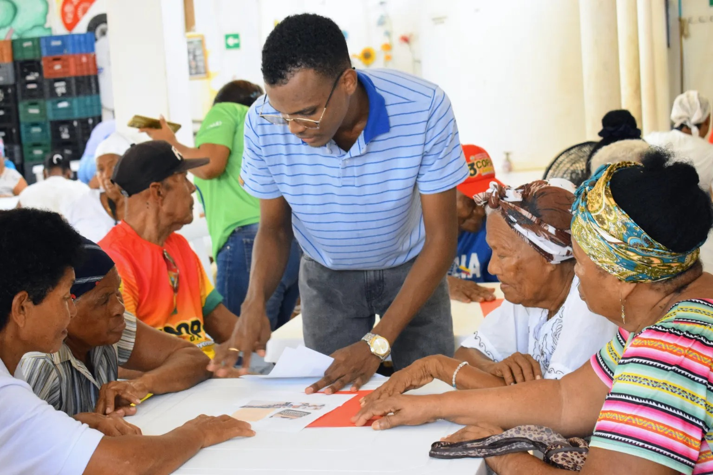

Actualidad territorial
Lo que pasa en nuestras comunidades
Acontecimientos, iniciativas y asuntos de interés colectivo.
Contamos lo que somos, visibilizamos nuestros talentos y conectamos las voces, las memorias y las realidades de nuestros territorios.
Desde el territorio insular de CartagenaConocemos nuestras realidades desde las voces de quienes las viven.

Acontecimientos, iniciativas y asuntos de interés colectivo.
Saberes, tradiciones y recuerdos de nuestra gente.
Procesos sociales, participación y oportunidades.
Reconocemos las voces locales, cuidamos la memoria y visibilizamos las expresiones culturales que mantienen viva nuestra identidad.
Un espacio para reconocer artistas, emprendedores, oficios y capacidades de nuestra gente.
Miradas propias, historias compartidas. Entrevistas, reportajes y producciones comunitarias.
Comparte una historia, propone un tema o sugiere una persona para entrevistar.
Somos un medio digital comunitario de la Corporación Insular Digital. Promovemos una comunicación cercana, participativa y responsable.